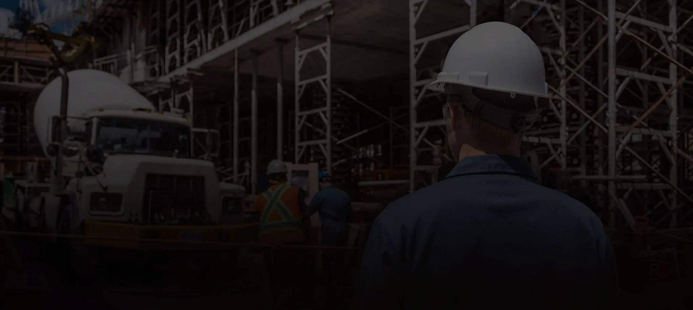
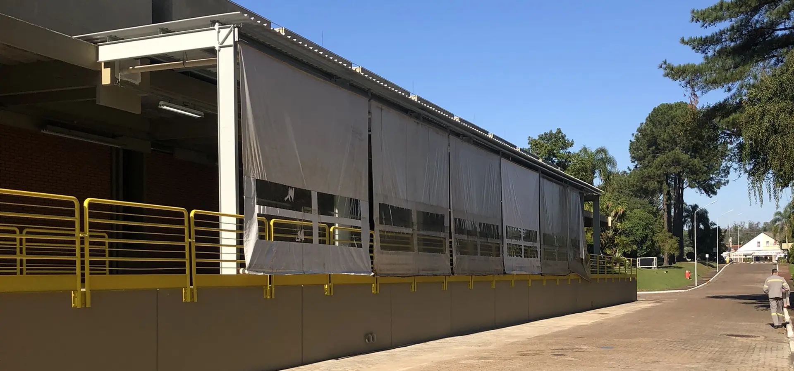

Execução de obras
Construímos do início ao acabamento, com cada etapa planejada para cumprir o prazo.
Saiba mais

35 anosConstruindo o futuro comqualidade e inovação
WhatsApp
Quem somos
Executamos, reformamos e mantemos instalações industriais e comerciais, do projeto à entrega.
Manutenção preventiva e corretiva programada para manter a planta produzindo.
Gestão responsável de custos, prazos e qualidade, da primeira etapa à entrega.
Engenheiros civis e arquitetos acompanham a obra do início ao fim.
O que fazemos
Construímos do início ao acabamento, com cada etapa planejada para cumprir o prazo.
Saiba maisPreventiva e corretiva, programada para reduzir paradas e manter a operação eficiente.
Saiba maisModernizamos edificações para as novas exigências de uso, segurança e sustentabilidade.
Saiba maisProjetos sob medida e controle de prazo, orçamento e qualidade até a entrega.
Saiba maisPortfólio
Fale com o nosso corpo técnico e receba um orçamento sem compromisso.